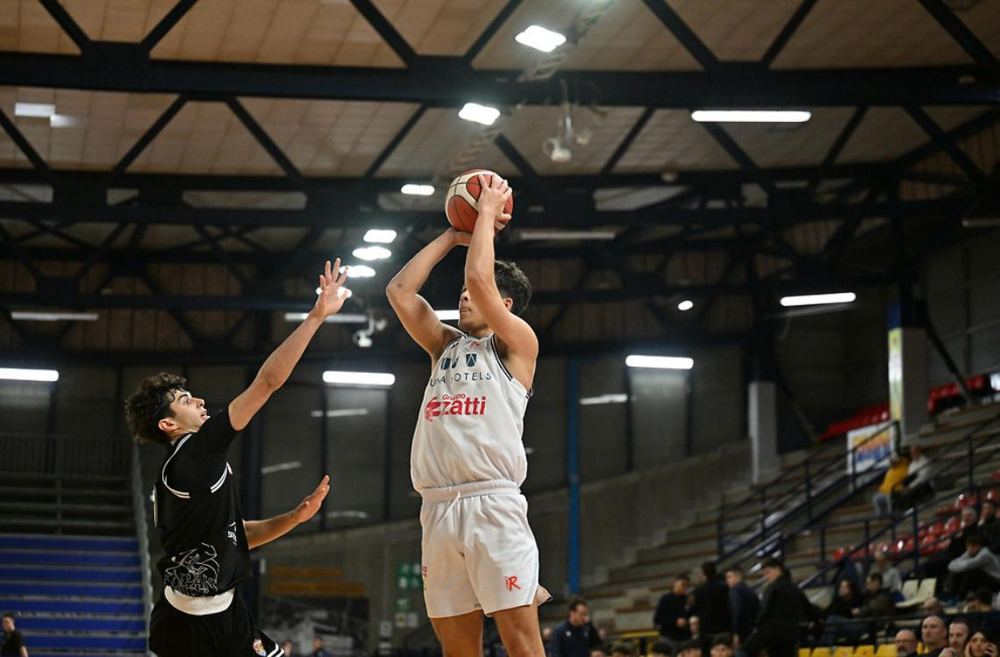

Chi Sono


Il Mio Profilo
Sono Arseniy Hadzhyiev, studente del quarto anno dell'indirizzo di Informatica presso l'I.I.S. Blaise Pascal. Ho intrapreso questo percorso formativo spinto da una forte passione per le nuove tecnologie e dal desiderio di comprendere come funzionano i sistemi digitali alla base dell'innovazione.
Obiettivi Formativi
Il mio studio è mirato alla costruzione di solide competenze tecniche, indispensabili per il mio futuro accademico e lavorativo. Attualmente nutro un forte interesse per la programmazione in vari linguaggi e il web design, ambiti in cui mi piacerebbe specializzarmi.
Sport e Soft Skills
Oltre alla tecnologia, ho una grande dedizione per il basket e gioco a livello agonistico nella Pallacanestro Reggiana. L'impegno sportivo è per me altamente formativo e mi ha permesso di sviluppare competenze trasversali importanti:
- Lavoro di squadra: sapersi relazionare e coordinare con i compagni per un obiettivo comune.
- Disciplina e Costanza: rispettare gli impegni presi e mantenere la determinazione di fronte alle sfide.
- Organizzazione e Gestione del Tempo: bilanciare efficacemente gli allenamenti intensivi con un buon rendimento scolastico.
Il Percorso FSL
In questo portfolio ho raccolto alcune delle esperienze e dei progetti sviluppati durante il triennio di Formazione Scuola Lavoro (FSL). Considero queste occasioni fondamentali per affiancare la pratica alla teoria e per prepararsi in modo concreto al mondo lavorativo.